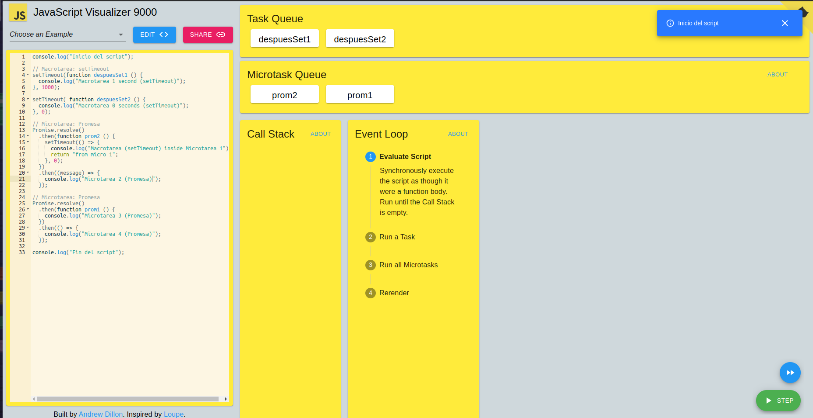

Primero se definen las microtareas y las macrotareas
Salen las líneas sincronas inmediatamente y se lee la primera promesa (prom2), luego se ejecuta pero detecta otra macrotask la cual manda para la fila de macrotareas
Entra el siguiente .then e imprime en consola el mensaje "Microtarea 2 (Promesa)" junto con las siguientes microtareas (promesas) que también imprimen su respectivo mensaje
Se ejecutan las macrotareas, primero la que se ubicaba dentro de la microtarea 1, luego se ejecuta el setTimeout con menor intervalo, y luego el de mayor intervalo